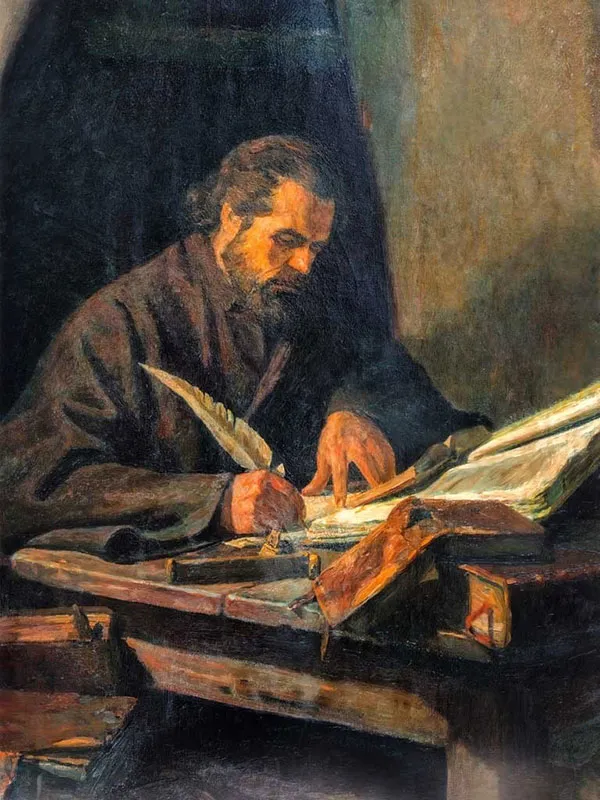
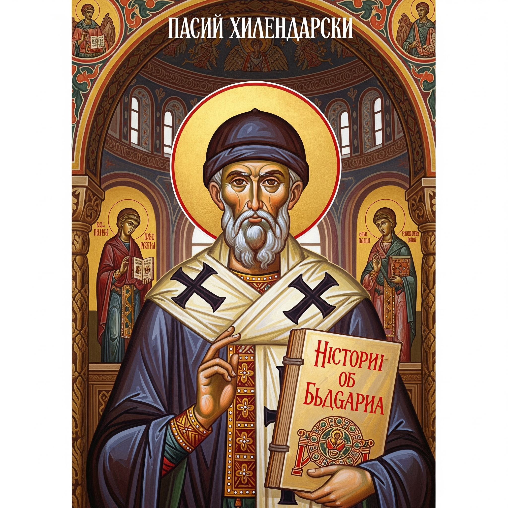
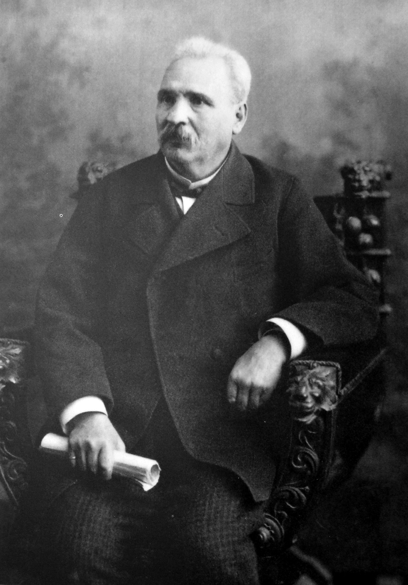
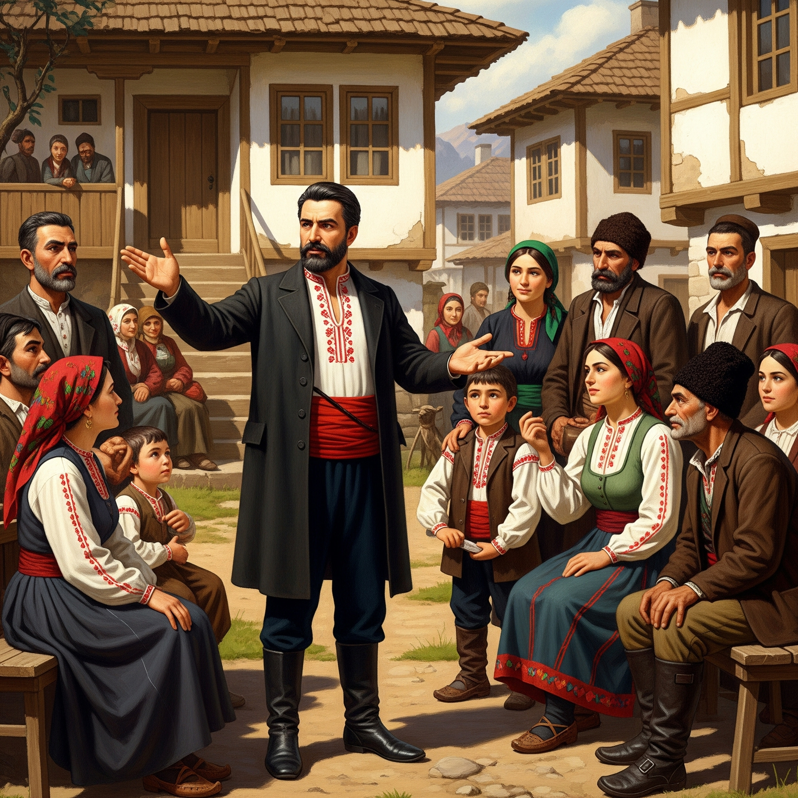
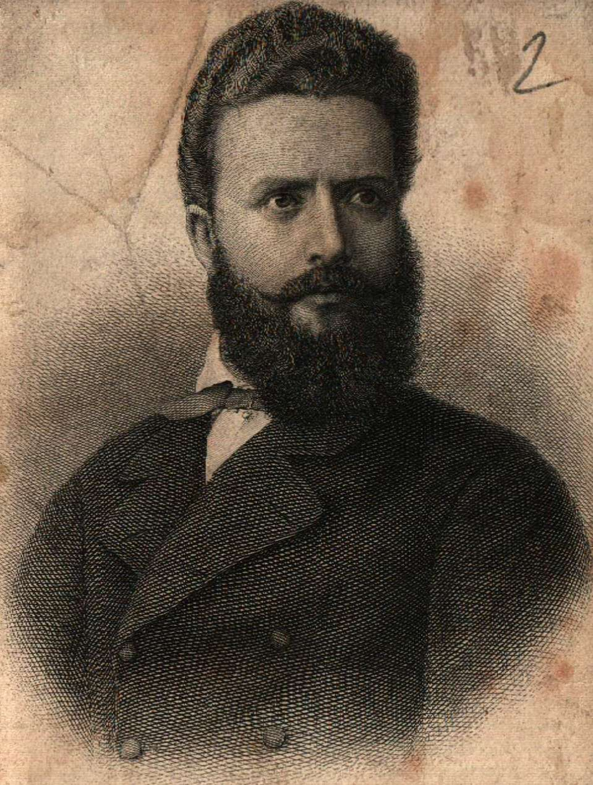
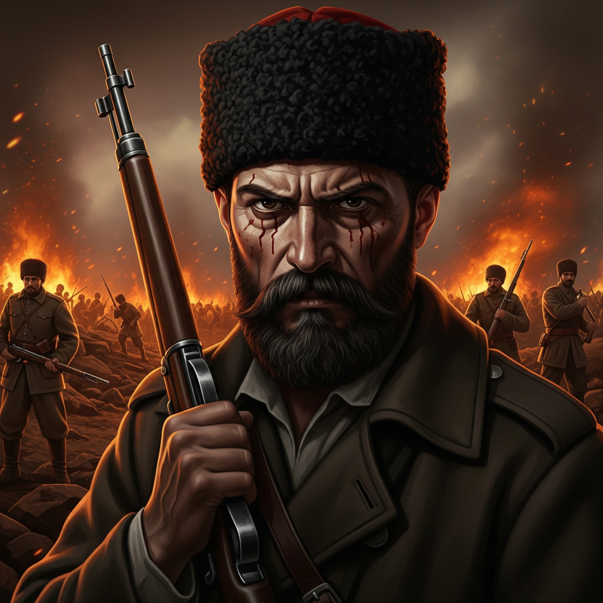

Паисий Хилендарски
Паисий създава образа на героя като съхранител на българската история и идентичност. Чрез „История славянобългарска“ той вдъхновява народа да не забравя своя произход и да се гордее с корените си.


Петко Славейков
Славейков представя героя през призмата на обикновения българин. Чрез хумор и ирония той подчертава както силните, така и слабите черти на народа, като акцентира върху важността на самоосъзнаването.


Христо Ботев
Ботев издига героя в култ – саможертвен борец за свобода и правда. Неговият герой е идеалист, готов да умре за отечеството и народната свобода, често с трагична съдба.
